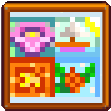

Estaciones:
 Hay cuatro Estaciones en Stardew Valley:  Primavera,
Primavera,  Verano,
Verano,  Otoño, y
Otoño, y  Invierno. Cada estación dura 28 días. El juego empieza el primer día de Primavera. Tras completar un ciclo de estaciones, el juego avanza un año cuando vuelve a empezar la primavera. Los años están ligados a algunos acontecimientos, pero no hay límite en el número de años que se pueden jugar. Las rutinas diarias de un aldeano pueden cambiar con una nueva estación o con algunos acontecimientos. Cada estación tiene su propio estilo visual.
Invierno. Cada estación dura 28 días. El juego empieza el primer día de Primavera. Tras completar un ciclo de estaciones, el juego avanza un año cuando vuelve a empezar la primavera. Los años están ligados a algunos acontecimientos, pero no hay límite en el número de años que se pueden jugar. Las rutinas diarias de un aldeano pueden cambiar con una nueva estación o con algunos acontecimientos. Cada estación tiene su propio estilo visual.
La Primavera, el Verano y el Otoño tienen dos días festivos, y el Invierno tiene cinco. En los festivales, la comunidad de Pueblo Pelícano se reúne para realizar actividades especiales. Se pueden comprar objetos especiales, jugar, ganar premios y obtener información.
La mayoría de los cultivos, artículos de recolección y peces sólo están disponibles durante su estación o estaciones concretas. La selección de semillas disponible en la Tienda local Pierre's (o MercaJoja) cambia cada estación.
Algunas zonas no se ven afectadas por las estaciones, como las zonas interiores y subterráneas, El desierto y la Isla Jengibre.
Transición:
Cuando termina una temporada (final del día 28), los cultivos se marchitan y mueren a menos que puedan crecer también durante la siguiente estación (preste atención a esos días de crecimiento). En ese momento, el fertilizante utilizado en el suelo también caduca, a menos que sea en una casilla donde se plante un cultivo de múltiples estaciones.
Durante los cambios de estación, su granja también experimentará deterioros menores: el barbecho de la tierra labrada y la aparición de escombros aleatorios que también deben limpiarse antes de que la siembra pueda comenzar de nuevo. Las tierras que siguen plantadas en el momento del cambio de estación no sufren deterioro. Durante el cambio de invierno a primavera (el año siguiente), tu granja experimenta un gran deterioro en el que aparecen más escombros.
Curiosidades:
En la escena inicial, llegas a Stardew Valley y no es Invierno. Sin embargo, te despiertas al día siguiente, tu primer día, y es el primer día de Primavera.